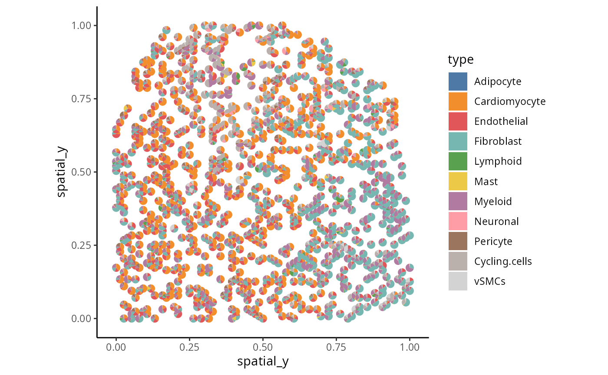
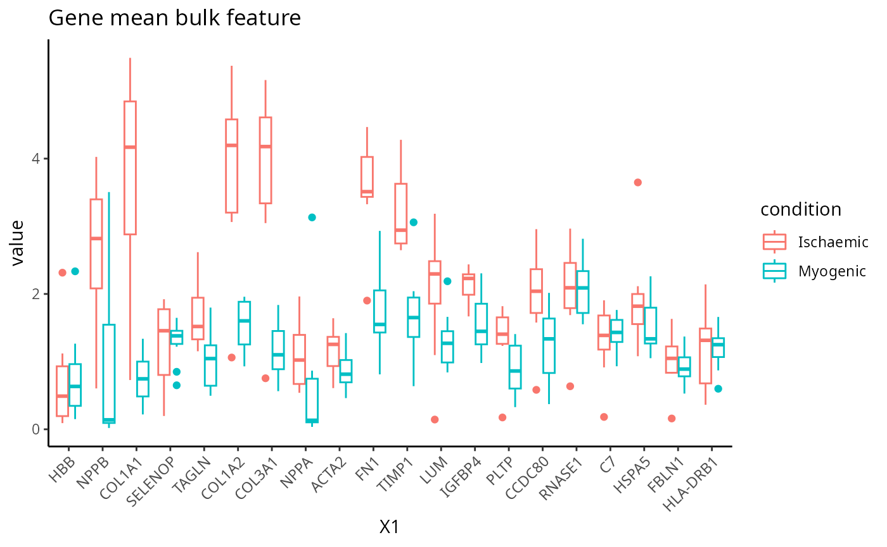

Unlocking single cell spatial omics analyses with scdney - Visium
Yue Cao, Andy Tran, Dario Strbenac, Nicholas Robertson Jean Yang
15 October, 2023
VisiumVersion3.Rmd
library(SingleCellExperiment)
library(ggplot2)
library(scFeatures)
library(ClassifyR)
library(lisaClust)
library(ggthemes)
library(spicyR)
library(dplyr)
library(limma)
library(plotly)
library(scattermore)
library(tidyr)
library(survival)
library(survminer)
library(spatstat.geom)
library(scater)
library(scran)
library(SPOTlight)
library(reshape)
theme_set(theme_classic())
# code for plotting purpose
plot_boxplot <- function( feature ){
data_plot <- t(feature)
data_plot <- melt(data_plot )
colnames(data_plot) <- c("X1", "X2", "value")
data_plot$condition <- unlist( lapply( strsplit( as.character( data_plot$X2), "_cond_"), `[`, 2))
p <- ggplot(data_plot, aes( x = X1, y = value , colour = condition)) +
geom_boxplot() +
theme(axis.text.x = element_text(angle = 45, vjust = 1, hjust=1))
return(p)
}
plot_barplot <- function(data , dodge=F ){
data$patient <- unlist( lapply( strsplit( rownames(data ), "_cond_"), `[`, 1))
data$condition <- unlist( lapply( strsplit( rownames(data ), "_cond_"), `[`, 2))
data <- as.data.frame( melt(data, id=c("patient", "condition")) )
p <- ggplot(data , aes( x = patient , y = value , fill = variable) ) +
geom_bar(stat="identity" ) + facet_wrap(~condition, scale="free") +
theme(axis.text.x = element_text(angle = 45, vjust = 1, hjust=1))
return (p)
}
draw_dotplot <- function(data_sce, sample, celltype , group , group_of_interest ){
df <- data.frame(colData( data_sce))
df_plot <- NULL
thispatient <- unique(df[[sample]])[1]
for ( thispatient in unique(df[[sample]])){
this_df <- df[df[[sample]] == thispatient, ]
temp_df <- table( this_df$region, this_df$celltype )
temp_df <- temp_df / rowSums(temp_df)
temp_df <- data.frame( temp_df)
temp_df$patient <- thispatient
temp_df$group <- unique( df[ which( df[[ sample]] == thispatient ), ][[group]] )
df_plot <- rbind(df_plot, temp_df)
}
df_plot <- df_plot %>% dplyr::group_by( Var1 , Var2, group ) %>%
summarise(mean_proportion = mean(Freq))
df_plot <- df_plot [ df_plot$group %in% group_of_interest, ]
p <- ggplot(df_plot, aes(y = Var2, x = Var1 ,colour =mean_proportion , size = mean_proportion ))+ geom_point() +
facet_grid(~group, scales = "free", space = "free" ) +
theme(axis.text.x = element_text(angle = 45, vjust = 1, hjust=1)) +
xlab("Region" ) + ylab("Celltype") + scale_colour_viridis_c()
return(p)
}
draw_region_clustering_result <- function( data_sce, sample , selected_sample ){
# get meta data for a selected patient to visualise
metadata <- colData(data_sce)
metadata <- metadata[metadata[[sample]] == selected_sample , ]
metadata <- data.frame(metadata)
metadata$celltype <-as.character( metadata$celltype)
plotlist <- list() # define the list to store images for region highlighting
plotlist_celltype <- list() # define the list to store images for celltype highlighting
thisregion <- unique(metadata$region)[1]
tableau_palette <- scale_colour_tableau()
color_codes <- tableau_palette$palette( 10 )
color_codes <- c(color_codes, "darkgrey" , "grey90")
names(color_codes) <- c( celltype , "other regions")
# put this in a function
# show the hatching plot as well
for ( thisregion in sort(unique(metadata$region))){
selected_region_index <- metadata$region == thisregion
metadata$selected_region <- "other regions"
metadata$selected_region[selected_region_index] <- "selected region"
metadata$selected_celltype <- metadata$celltype
metadata$selected_celltype[!selected_region_index ] <- "other regions"
# metadata$celltype <- factor(metadata$celltype, levels = c(unique(metadata$celltype), "other regions"))
p <- ggplot(metadata, aes(x = spatial_x , y = spatial_y, colour = selected_region )) +
geom_point( alpha = 0.8 ) + ggtitle(thisregion) + scale_colour_manual(values = c("grey" , "red"))
p2 <- ggplot(metadata, aes(x = spatial_x , y = spatial_y, colour = selected_celltype )) +
geom_point(alpha = 0.8 ) + ggtitle(thisregion) + scale_colour_manual(values = color_codes)
plotlist [[thisregion ]] <- p
plotlist_celltype [[thisregion ]] <- p2
}
a <- ggarrange(plotlist = plotlist , ncol = 5, nrow = 1 , common.legend = T )
b<- ggarrange(plotlist = plotlist_celltype , ncol = 5, nrow = 1 , common.legend = T )
return (list(a,b))
}
draw_selected_region_boxplot <- function(data_sce, sample , celltype, group , group_of_interest, select_region){
df <- data.frame(colData( data_sce))
df_plot <- NULL
for ( thispatient in unique(df[[sample]] )){
this_df <- df[df[[sample]] == thispatient, ]
temp_df <- table( this_df$region, this_df[[celltype]])
temp_df <- temp_df / rowSums(temp_df)
temp_df <- data.frame( temp_df)
temp_df$patient <- thispatient
temp_df$group <- unique( df[ which( df[[ sample]] == thispatient ), ][[group]] )
df_plot <- rbind(df_plot, temp_df)
}
df_plot_region_1 <- df_plot[df_plot$Var1 == select_region, ]
df_plot_region_1 <- df_plot_region_1 [ df_plot_region_1$group %in% group_of_interest, ]
p <- ggplot(df_plot_region_1, aes(x = Var2, y = Freq, colour = group)) +
geom_boxplot()+
theme(axis.text.x = element_text(angle = 45, vjust = 1, hjust=1)) +
ylab("Proportion") + xlab("Cell type")+ ggtitle("Region 2") + ylim(0,1)
return(p )
}Overview
As single cell technology advances, the recent development of spatial omics allows us to examine the spatial organisation of cells within tissues in their native environment. This case study will discuss the challenges and analytical focus associated with using multi-sample spatial datasets for disease risk prognosis. We will also talk about general analytical strategies and the critical thinking questions that arise in the workflow.
Preparation and assumed knowledge
- Knowledge of R syntax
- Familiarity with the SingleCellExperiment class
- Basic knowledge in single cell data analysis. You can access our previous workshops for a quick review in single cell data analysis.
- Ability to install all required R packages, please check
sessionInfoat the end of this document to ensure you are using the correct version. - Familiarity with our previous workshop vignette on Introduction to Single Cell RNA-seq Analysis
Learning objectives
- Describe and visualise spatial omics datasets
- Calculate different measures that describe the spatial distribution of cell types
- Generate individual feature representations from a cell-level expression matrix
- Perform multi-view disease outcome prognosis with the package
ClassifyR - Develop understanding on
- how to assess the performance of classification and survival
models
- how to identify and assess individual performance given a survival model.
- how to assess the performance of classification and survival
models
- Explore various strategies for disease outcome prognosis using
spatial omics data
Note: This data analysis workshop offers
participants the opportunity to engage in hands-on analysis using R.
However, if you are not comfortable with coding in R, you can still
acquire valuable interpretation skills by reviewing the output we
provide in this file.
Initial exploration and visualisation
Data and background
In this demo, we look at a Visium dataset taken from Kuppe, C., Ramirez Flores, R. O., Li, Z., Hayat, S., Levinson, R. T., Liao, X., … & Kramann, R. (2022). Spatial multi-omic map of human myocardial infarction. Nature, 608(7924), 766-777.
Visium captures spatial information, creating images that display the
distribution of different cell types and their associated gene
expression patterns in the tissue.
In this dataset, the authors quantified the expression of >10000
genes in control and in patients with myocardial infarction. In this
demo, we examine patients defined to be in the myogenic group and
ischaemic group. The myogenic group is defined by samples taken from
control and the unaffected remote zone, and the ischaemic group is
defined by samples taken from the ischaemic zone.
Exploration 1: How complex is my data ?
data_sce <- readRDS("../../data/small_data.rds")
data_sce## class: SpatialExperiment
## dim: 11681 19000
## metadata(3240): X_approximate_distribution X_normalization ...
## schema_version title
## assays(2): X logcounts
## rownames(11681): LINC01409 LINC01128 ... VAMP7 AC007325.4
## rowData names(1): features
## colnames(19000): ACAGAACTGAGAACAA-1 TTGCCCTGATCACGGG-1 ...
## CTGACATAGAAATAGA-1.16 ATTAGGCGATGCTTTC-1.24
## colData names(33): n_counts n_genes ... number_cells condition
## reducedDimNames(3): X_pca X_spatial X_umap
## mainExpName: NULL
## altExpNames(0):
## spatialCoords names(0) :
## imgData names(1): sample_id
## Expression matrix is stored in genes by cells matrix
logcounts(data_sce)[1:7, 1:7]## 7 x 7 sparse Matrix of class "dgCMatrix"
## ACAGAACTGAGAACAA-1 TTGCCCTGATCACGGG-1 CATATAGGTACAGTCA-1
## LINC01409 . . .
## LINC01128 1.431438 . 1.351835
## NOC2L . . .
## KLHL17 . . .
## HES4 . . .
## ISG15 . 1.279462 .
## AGRN . . .
## TGCGAGAATATTACCC-1 TATTCAATTCTAATCC-1 GTCCTATTGTTGTGGT-1
## LINC01409 . . .
## LINC01128 . . .
## NOC2L . . .
## KLHL17 . . .
## HES4 1.146986 1.389528 .
## ISG15 . . 1.454652
## AGRN . . .
## TAACCTACCGTCCGAG-1
## LINC01409 .
## LINC01128 .
## NOC2L .
## KLHL17 .
## HES4 .
## ISG15 1.475897
## AGRN .
## The object stores meta data (such as patient outcome information) about each cell
## the metadata is stored in colData() for a spatialexperiment object.
# we need to convert to a data.frame to be input into datatable function
DT::datatable( data.frame(colData(data_sce))[1:5, ], options = list(scrollX = TRUE))The code above examine the data objects:
- The dataset contains 11681 genes and 19000 cells (after
subsampling).
- The outcome is 11 myogenic samples (4 from control, 7 from remote
zone) and 8 ischaemic samples.
Exploration 2: How to visualise my data?
Typically in spatial data, we perform dimension reduction to reduce
and project the high dimensional cell by gene matrix onto 2D space. This
allows us to visualise various things of interest, such as the
distribution of cell types and disease outcomes.
Visium is a spot-based technology, meaning that each spot captures 1-10
cells. Therefore each spot may represent a mixture of cells from
different cell types. In this dataset, the author used cell2location
which is a spatial deconvolution tool to predict the cell type
probability or composition of each of the spot. There are also many
other deconvolution tools available, eg, CARD published in Ma, Y., &
Zhou, X. (2022). Spatially informed cell-type deconvolution for spatial
transcriptomics. Nature biotechnology, 40(9), 1349-1359.
For demonstration purposes, in the plot below we visualise each spot using the cell type with maximum probability. Remember, the focus is to identify any interesting patterns from the plot.
## Perform UMP calculation
data_sce <- runUMAP(data_sce, exprs_values = "logcounts", scale=TRUE, min_dist = 0.3)
## Visualize UMAP and highlight variable of interest
a <- plotUMAP(data_sce, colour_by = "celltype")
b <- plotUMAP(data_sce, colour_by = "condition")
c <- plotUMAP(data_sce, colour_by = "sample")
## Combine multiple plot in a grid format
ggarrange(plotlist = list(a,b,c))
Critical Thinking Q:
- Q1: Is there patient batch effect?
- Q2: Are the myogenic group and ischaemic group easy or difficult to
distinguish?
Exploration 3: Is there spatial structure in my data?
The advantage with spatial omics is that we can examine the
organisation of the cell types as it occurs on the tissue slide. Here,
we visualise one of the slides from a patient. As an optional exercise,
you can: - permute the cell type label, and
- permute the spatial coordinate.
to give a sense of what is random ordering.
The code below is to set a consistent colour for each cell type throughout this rmarkdown. We use the colour palette Tableau because it only has 10 colours and we have 11 cell types, and we colour the last cell type grey.
# SET UP code for visualising
celltype <- c("Adipocyte" , "Cardiomyocyte" ,
"Endothelial" , "Fibroblast" , "Lymphoid" ,
"Mast" , "Myeloid" ,
"Neuronal" , "Pericyte" , "Cycling.cells", "vSMCs" )
tableau_palette <- scale_colour_tableau()
color_codes <- c( tableau_palette$palette(10) , "lightgrey")
names(color_codes) <- celltypeSpatial plot
We select a particular patient “IZ_P9_cond_Ischaemic†(a patient in the ischaemic group) and visualise its spatial pattern using ggplot.
# select one sample to visualise
one_sample_data <- data_sce[, data_sce$sample == "IZ_P9_cond_Ischaemic"]
one_sample <- data.frame( colData(one_sample_data) )
a <- ggplot(one_sample, aes(x = spatial_x , y = spatial_y, colour = celltype)) + geom_point(alpha=0.7) + scale_colour_manual(values = color_codes) + ggtitle("Original slide")
a[Optional code] Random spatial pattern
The code here investigates permutations of spatially resolved data. Please examine the next tab for actual results.
## Optional: Permute the cell type labels
one_sample$celltype_permute <- sample(one_sample$celltype)
b <- ggplot(one_sample, aes(x = spatial_x , y = spatial_y, colour =celltype_permute)) + geom_point(alpha=0.7) + scale_colour_manual(values = color_codes) + ggtitle("Permute the cell type label")
## Optional: Permute the spatial coordinate
one_sample$spatial_x_permute <- sample(one_sample$spatial_x)
one_sample$spatial_y_permute <- sample(one_sample$spatial_y)
c <- ggplot(one_sample, aes(x = spatial_x_permute , y = spatial_y_permute, colour = celltype)) + geom_point(alpha=0.7) + scale_colour_manual(values = color_codes) + ggtitle("Permute the X, Y coordinate")Spatial structure
The aim here is to have an understanding of the concept of spatial randomness. Spatial statistics is a topic of study that encompasses a wide range of research. The next two code chucks focus on the examination of two distinct permutation strategies. The objective of this investigation is to gain an understanding of how various permutation strategies might yield varied perceptions of randomness.
Exploration 4: Visium specific visualisation
Instead of plotting the cell type with maximum probability, we can also visualise the cell type composition of each spot using a pie chart.
x <- data.frame( imagecol = one_sample$spatial_y,
imagerow = one_sample$spatial_x)
rownames(x) <- paste0("Spot", 1:nrow(x))
y <- data.frame( colData(one_sample_data)[ ,celltype ] )
rownames(y) <- paste0("Spot", 1:nrow(y))
## we use a function to plot the piechart
plotSpatialScatterpie(x = x, y = y , pie_scale = 0.7) + theme_classic() + scale_fill_manual(values = color_codes) + ylab("spatial_y") + xlab("spatial_y")
Critical Thinking Q:
Q3: Is there structure in the data or is the cell type randomly distribution?
Describing tissue microenvrionments and cellular neighbourhoods
Do cell type co-localise in specfic regions?
Spatial data allow for the identification of a variety of characteristics, including distinct cell types within an image, which provide an overview of the tissue environment. This allows scientists to explore the cellular architecture and environment and its association with phenotype information (e.g meta-data). For our data story, we are interested in whether ischaemic and myogenic individuals are different. In this section, we examine graphically how cell-type co-localisation varies across spatial regions and how such information is associated with disease conditions. There are many packages that perform this task. Here, we use the lisaClust function [https://www.bioconductor.org/packages/devel/bioc/html/lisaClust.html] that is based on the “local L-function†to spatially cluster cells into different regions with similar cell type compositions.
set.seed(51773)
BPPARAM <- simpleSeg:::generateBPParam(2)
# Cluster cells into spatial regions with similar composition.
data_sce <- lisaClust(
data_sce ,
k = 5,
Rs = c(20, 50, 100),
sigma = 50,
spatialCoords = c("spatial_x", "spatial_y"),
cellType = "celltype",
imageID = "sample" ,
regionName = "region",
BPPARAM = BPPARAM
)Which regions appear to be different between the ischaemic and myogenic patients?
We have use the lisaClust function in the previous
subsection to cluster cells into five different spatial regions. Next,
as a case study, we will compare individuals with ischaemic and myogenic
disease and examine graphically, if any regions appear to be different
between disease conditions.
Individual level
Here, we visualise the spatial domain (region) detection result based on one individual. We can either visualise all regions in one graph or highlight each region in separate graphs. Here we will use the terminology “spatial domain†and “regions†interchangeably.
Depending on the number of regions, it may be more useful to
visualise the spatial regions either collectively in a single graph or
separately in multiple graphs. To visualise it in a single graph, the
hatchingPlot() function is used to create hatching patterns
to represent spatial regions and cell-types. The hatching geom is used
to create hatching patterns to represent spatial regions.
## To visualise it in a single graph
hatchingPlot(
data_sce,
useImages = "IZ_P9_cond_Ischaemic",
region = "region",
imageID = "sample",
cellType = "celltype",
spatialCoords = c("spatial_x", "spatial_y") ) We have written a small function
draw_region_clustering_result to visualise the data
separately in multiple graphs for the individual
IZ_P9_cond_Ischaemic.
draw_region_clustering_result(data_sce ,
sample = "sample" ,
selected_sample = "IZ_P9_cond_Ischaemic" )## [[1]]##
## [[2]]Across individuals
We can better interpret the region outputs by summarising the proportion of each cell type in a region across the individuals.
draw_dotplot(data_sce,
sample = "sample" ,
celltype = "celltype" ,
group= "condition" ,
group_of_interest = c("Myogenic" , "Ischaemic"))Critical Thinking Q:
Q4: Which regions would you focus on next?
[optional] A complex graphical options using ggplot
df <- data.frame(colData( data_sce))
df <- df %>% dplyr::group_by(sample , condition , region) %>%
count(celltype) %>%
mutate(proportion = n / sum(n))
ggplot(df, aes(y = proportion, x = sample , fill = celltype))+ geom_col()+facet_grid(~region+condition, scales = "free", space = "free" ) + scale_fill_manual(values = c(color_codes)) +
theme(axis.title.x=element_blank(),
axis.text.x=element_blank(),
axis.ticks.x=element_blank())Critical Thinking Q:
Q5: Does your conclusion change after looking at a different plot?
Further exploration by visualising selected regions
The number of sub-cell types increase considerably when we want to
add spatial domain (region) information. To enhance clarity and
facilitate understanding, it may be helpful to choose a predetermined
region. The code generates a set of boxplots that enable the comparison
of cell type proportions between individuals with ischaemic and myogenic
conditions in region_2.
draw_selected_region_boxplot(data_sce,
sample = "sample",
celltype = "celltype" ,
group= "condition" ,
group_of_interest = c("Myogenic" , "Ischaemic") ,
select_region = "region_2" )Discussion:
Comparing cell-type compositions in the region, what can you tell about the regions?
How do we generate molecular representations for each individual?
In this workshop, we use scFeatures to generate
molecular representations for each patient. The molecular representation
is interpretable and hence facilitates downstream analysis of the
patient. Overall, scFeatures generates features across six
categories representing different molecular views of cellular
characteristics. These include: - i) cell type proportions - ii) cell
type specific gene expressions - iii) cell type specific pathway
expressions - iv) cell type specific cell-cell interaction (CCI) scores
- v) overall aggregated gene expressions - vi) spatial metrics The
different types of features constructed enable a more comprehensive
multi-view understanding of each patient from a matrix of
spots x cells.
print("number of cells in each sample")## [1] "number of cells in each sample"
table(data_sce$sample)##
## control_P1_cond_Myogenic control_P17_cond_Myogenic control_P7_cond_Myogenic
## 1000 1000 1000
## control_P8_cond_Myogenic IZ_P10_cond_Ischaemic IZ_P13_cond_Ischaemic
## 1000 1000 1000
## IZ_P15_cond_Ischaemic IZ_P16_cond_Ischaemic IZ_P2_cond_Ischaemic
## 1000 1000 1000
## IZ_P3_cond_Ischaemic IZ_P9_cond_Ischaemic IZ_P9_rep2_cond_Ischaemic
## 1000 1000 1000
## RZ_P11_cond_Myogenic RZ_P12_cond_Myogenic RZ_P2_cond_Myogenic
## 1000 1000 1000
## RZ_P3_cond_Myogenic RZ_P5_cond_Myogenic RZ_P6_cond_Myogenic
## 1000 1000 1000
## RZ_P9_cond_Myogenic
## 1000
# metadata <- data.frame( table(data_sce$sample) )
# colnames(metadata)[1] <- "Patient"
# DT::datatable(metadata , options = list(pageLength = 5), width = "400px")
print("number of cells in each celltype")## [1] "number of cells in each celltype"
table(data_sce$celltype)##
## Cardiomyocyte Cycling.cells Endothelial Fibroblast Mast
## 8782 1755 1878 3714 41
## Myeloid Pericyte vSMCs Lymphoid Neuronal
## 2421 44 266 40 34
## Adipocyte
## 25
# metadata <- data.frame( table(data_sce$celltype) )
# colnames(metadata)[1] <- "Region specific cell type"
# DT::datatable(metadata , options = list(pageLength = 5), width = "400px")
# Discussion:
Are there any samples or cell types you would like to remove from the data?
How to create molecular representations of individuals ?
There are different ways you can use scFeatures to
generate molecular representations for individuals and it requires the
following information for spatial data.
- data,
- sample,
- X coordinates,
- Y coordinates,
- feature_types, and
- type
There are a total of 13 different types of features (feature_types)
that you can choose to generate. The arugment type refers the type of
input data we have. This is either scrna (single-cell
RNA-sequencing data), spatial_p (spatial proteomics data),
or spatial_t (single-cell spatial data).
Calculate feature_types
Suppose that we are interested in determining the proportion of each
cell type in each individual within each region. It is necessary to
specify type = spatial_t to reflect that we have Visum data
and feature_types = proportion_raw to indicate we intend to
calculate cell type proportion for each of the region-specific sub-cell
types.
## [A] The next few lines extract specific information from data_sce as input to scFeatures.
## Extract the expression matrix from data_sce
data <- logcounts( data_sce )
## Extract the sample information
sample <- data_sce$sample
## Extract the x, y coordiantes
spatialCoords <- list(data_sce$spatial_x, data_sce$spatial_y)
# For spatial transcriptomics, we need to specify the cell type prediction of each spot
prediction.scores <- colData(data_sce)[, celltype]
prediction.scores <- as.matrix( t(prediction.scores) )
### [B] Running scFeatures
scfeatures_result <- scFeatures(data = data ,
sample = sample,
spatialCoords = spatialCoords,
spotProbability = prediction.scores,
feature_types = "proportion_raw",
type ="spatial_t" )The generated feature is a matrix of samples x features,
the code below shows a compositional plot for each individuals
feature <- scfeatures_result$proportion_raw
plot_barplot( feature ) + ggtitle("Proportion raw feature")All cell types and features in one line of code
The code below enable us to generate all feature types for all cell types in a line. Due to limitations with today’s computational capacity, ** Please DO NOT run it in today’s workshop, it will crash your system**.
scfeatures_result <- scFeatures(data = data ,
sample = sample,
spatialCoords = spatialCoords ,
spotProbability = prediction.scores,
type ="spatial_t",
ncores = 10)
scfeatures_result <- readRDS("../../data/scfeatures_result_matrix.rds")What can we learn from the outputs from scFeatures?
Assuming you have already generated a collection of molecular
representations for individuals. Please load the prepared RDS file
scfeatures_result_matrix.rds. Again, you can remind
yourself that all generated feature types are stored in a matrix of
samples x features.
# Upload pre-generated RDS file
scfeatures_result <- readRDS("../../data/scfeatures_result_matrix.rds")
# We have generated a total of 13 types of feature categories
names(scfeatures_result)## [1] "proportion_raw" "proportion_logit" "proportion_ratio"
## [4] "gene_mean_celltype" "pathway_mean" "gene_mean_bulk"
## [7] "gene_prop_bulk" "gene_cor_bulk" "L_stats"
## [10] "celltype_interaction" "morans_I" "nn_correlation"
# What is the number of features that we have generated
lapply(scfeatures_result, dim)## $proportion_raw
## [1] 19 11
##
## $proportion_logit
## [1] 19 11
##
## $proportion_ratio
## [1] 19 55
##
## $gene_mean_celltype
## [1] 19 33561
##
## $pathway_mean
## [1] 19 550
##
## $gene_mean_bulk
## [1] 19 3051
##
## $gene_prop_bulk
## [1] 19 3051
##
## $gene_cor_bulk
## [1] 19 60031
##
## $L_stats
## [1] 19 121
##
## $celltype_interaction
## [1] 19 121
##
## $morans_I
## [1] 19 3051
##
## $nn_correlation
## [1] 19 3051Association study - can we identify “differential expression†for a feature of interest
The R object scfeatures_result contains a variety of
features. An important question focuses on the identification of
features that reflect an association with the prognostic outcome,
specifically distinguishing between disease conditions. The code
provided below demonstrates the use of the limma() function
to fit a linear model for the purpose of analysing gene_mean_celltype as
an illustration feature. The feature type known as
gene_mean_celltype represents the mean gene expression for
each sub-cell type specific to a spatial region.
# Extract cell type specific gene expression for all regions.
gene_mean_bulk <- scfeatures_result$gene_mean_bulk
# this transposes the data
# in bioinformatics convention, features are stored in rows
# in statistics convention, features are stored in columns
gene_mean_bulk <- t(gene_mean_bulk)
# Extract the two conditions of interest - disease condition
condition <- unlist( lapply( strsplit( colnames(gene_mean_bulk), "_cond_"), `[`, 2))
condition <- data.frame(condition = condition )
# Calculate log fold change each gene using limma
design <- model.matrix(~condition, data = condition)
fit <- lmFit(gene_mean_bulk, design)
fit <- eBayes(fit)
tT <- topTable(fit, n = Inf)
tT$gene <- rownames(tT)We visualise the comparison using a volcano plot and a dotplot for the cell type specific expression feature. This is a type of scatter-plot that is used to quickly identify changes in large data sets and represent the significance (y-axis) versus effect size or fold-change (x-axis).
p1 <- ggplot( tT , aes(logFC,-log10(P.Value) , text = gene ) )+
geom_point(aes(colour=-log10(P.Value)), alpha=1/3, size=1) +
scale_colour_gradient(low="blue",high="red")+
xlab("log2 fold change") + ylab("-log10 p-value")
tT <- tT[ order(tT$logFC, decreasing = T), ]
tT <- tT[1:20, ]
p2 <- ggplot( tT , aes( y = reorder(gene, logFC) , x = logFC ) )+
geom_point(aes(colour=-log10(P.Value)), alpha=1/3, size=4) +
scale_colour_gradient(low="blue",high="red")+
xlab("logFC") + ylab("region specific cel type specfic features" )
ggarrange(plotlist = list(p1,p2))
Critical Thinking Q:
Q6: Which figure do you prefer? The volcano plot or the dotplot?
Can we identify feature of interest among each types of feature category?
In order to further develop our understanding of our data, it is
important to bear in mind that the outcomes derived from
scFeatures combine several association studies. Hence, it
is necessary to examine every separate feature category as an individual
unit of study. This section presents a graphic representation showing
how to visualise the distribution of features across individuals. The
following code has been developed to identify and retrieve all samples
that have been associated to disease outcome. This particular step is
necessary in this setting as our focus is limited to two specific
categories of individuals rather than including all samples.
Proportion raw
feature <- scfeatures_result$proportion_raw
plot_barplot(feature ) + ggtitle("Proportion raw feature")Pathway mean
feature <- scfeatures_result$pathway_mean[, 1:10]
plot_boxplot(feature) + ggtitle("Pathway mean feature")Gene mean bulk
feature <- scfeatures_result$gene_mean_bulk[, 1:20]
plot_boxplot(feature) + ggtitle("Gene mean bulk feature")
Nearest neighbour correlation
feature <- scfeatures_result$nn_correlation[, 1:10]
plot_boxplot(feature) + ggtitle("Nearest neighbour correlation feature")Association study report - are the generated features sensible?
To accommodate easier interpretation of the features,
scFeatures contains a function
run_association_study_report that enables the user to
readily visualise and explore all generated features with one line of
code. This should be used with caution as depending on the number of
cell-types considered, some of the automatically-generated graphics may
not be the most efficient way for interpretation. Specify a folder to
store the html report. Using the function getwd(), we
specify that we will store it in the current working directory.
output_folder <- getwd()
run_association_study_report(scfeatures_result, output_folder )Critical Thinking Q:
Using the HTML, we can look at some of the critical thinking questions that a researcher would ask about the generated features. These questions are exploratory and there is no right or wrong answer.
Q7: Do the generated features look reasonable?
Which cell type(s) would you like to focus on at your next stage of
analysis?
Which feature type(s) would you like to focus on at your next stage of
analysis?
Q8: Are the conditions in your data relatively easy or difficult to
distinguish?
Can we classify or discrimiante between the ischaemic and myogenic samples?
In this section we build a classification model to predict whether the samples belong to the ischaemic or myogenic group.
Building classification model
Recall in the previous section that we have stored the 13 feature
types matrix in a list. Instead of manually retrieving each matrix from
the list to build separate models, classifyR can directly
take a list of matrices as an input and run a repeated cross-validation
model on each matrix individually.
Below, we run 5 repeats of 3 folds cross-validation.
Visualising the classification performance
To examine the classification model performance, we first need to specify a metric to calculate. Here, we calculate the balanced accuracy.
classifyr_result <- readRDS("../../data/classifyr_result.rds")
classifyr_result <- lapply(classifyr_result,
function(x) calcCVperformance(x, performanceType = "Balanced Accuracy"))Format the output and visualise the accuracy using boxplots.
level_order <- names(scfeatures_result)
p <- performancePlot(classifyr_result) +
theme(axis.text.x = element_text(angle = 45, vjust = 1, hjust=1)) +
scale_x_discrete(limits = level_order)
p
Session info
## R version 4.4.0 (2024-04-24)
## Platform: x86_64-pc-linux-gnu
## Running under: Debian GNU/Linux 12 (bookworm)
##
## Matrix products: default
## BLAS: /usr/lib/x86_64-linux-gnu/openblas-pthread/libblas.so.3
## LAPACK: /usr/lib/x86_64-linux-gnu/openblas-pthread/libopenblasp-r0.3.21.so; LAPACK version 3.11.0
##
## locale:
## [1] LC_CTYPE=C.UTF-8 LC_NUMERIC=C LC_TIME=C.UTF-8
## [4] LC_COLLATE=C.UTF-8 LC_MONETARY=C.UTF-8 LC_MESSAGES=C.UTF-8
## [7] LC_PAPER=C.UTF-8 LC_NAME=C LC_ADDRESS=C
## [10] LC_TELEPHONE=C LC_MEASUREMENT=C.UTF-8 LC_IDENTIFICATION=C
##
## time zone: Australia/Sydney
## tzcode source: system (glibc)
##
## attached base packages:
## [1] stats4 stats graphics grDevices utils datasets methods
## [8] base
##
## other attached packages:
## [1] reshape_0.8.9 SPOTlight_1.8.0
## [3] scran_1.32.0 scater_1.32.0
## [5] scuttle_1.14.0 spatstat.geom_3.2-9
## [7] spatstat.data_3.0-4 survminer_0.4.9
## [9] ggpubr_0.6.0 tidyr_1.3.1
## [11] scattermore_1.2 plotly_4.10.4
## [13] limma_3.60.2 dplyr_1.1.4
## [15] spicyR_1.16.0 ggthemes_5.1.0
## [17] lisaClust_1.12.0 ClassifyR_3.9.1
## [19] survival_3.6-4 BiocParallel_1.38.0
## [21] MultiAssayExperiment_1.30.0 generics_0.1.3
## [23] scFeatures_1.4.0 ggplot2_3.5.1
## [25] SpatialExperiment_1.14.0 SingleCellExperiment_1.26.0
## [27] SummarizedExperiment_1.34.0 Biobase_2.64.0
## [29] GenomicRanges_1.56.0 GenomeInfoDb_1.40.1
## [31] IRanges_2.38.0 S4Vectors_0.42.0
## [33] BiocGenerics_0.50.0 MatrixGenerics_1.16.0
## [35] matrixStats_1.3.0
##
## loaded via a namespace (and not attached):
## [1] R.methodsS3_1.8.2 GSEABase_1.66.0
## [3] tiff_0.1-12 EnsDb.Mmusculus.v79_2.99.0
## [5] goftest_1.2-3 DT_0.33
## [7] Biostrings_2.72.0 HDF5Array_1.32.0
## [9] vctrs_0.6.5 spatstat.random_3.2-3
## [11] digest_0.6.35 png_0.1-8
## [13] shape_1.4.6.1 EnsDb.Hsapiens.v79_2.99.0
## [15] registry_0.5-1 ggrepel_0.9.5
## [17] deldir_2.0-4 magick_2.8.3
## [19] MASS_7.3-60.2 pkgdown_2.0.9
## [21] reshape2_1.4.4 httpuv_1.6.15
## [23] foreach_1.5.2 withr_3.0.0
## [25] xfun_0.43 ggfun_0.1.4
## [27] memoise_2.0.1 proxyC_0.4.1
## [29] cytomapper_1.16.0 ggbeeswarm_0.7.2
## [31] systemfonts_1.0.6 ragg_1.3.0
## [33] zoo_1.8-12 GlobalOptions_0.1.2
## [35] gtools_3.9.5 V8_4.4.2
## [37] SingleCellSignalR_1.16.0 R.oo_1.26.0
## [39] promises_1.3.0 KEGGREST_1.44.0
## [41] httr_1.4.7 rstatix_0.7.2
## [43] restfulr_0.0.15 rhdf5filters_1.16.0
## [45] rhdf5_2.48.0 rstudioapi_0.16.0
## [47] UCSC.utils_1.0.0 concaveman_1.1.0
## [49] babelgene_22.9 curl_5.2.1
## [51] zlibbioc_1.50.0 ScaledMatrix_1.12.0
## [53] polyclip_1.10-6 GenomeInfoDbData_1.2.12
## [55] SparseArray_1.4.0 fftwtools_0.9-11
## [57] xtable_1.8-4 stringr_1.5.1
## [59] desc_1.4.3 doParallel_1.0.17
## [61] evaluate_0.23 S4Arrays_1.4.1
## [63] irlba_2.3.5.1 colorspace_2.1-0
## [65] magrittr_2.0.3 later_1.3.2
## [67] viridis_0.6.5 lattice_0.22-6
## [69] NMF_0.27 XML_3.99-0.16.1
## [71] cowplot_1.1.3 RcppAnnoy_0.0.22
## [73] ggupset_0.3.0 svgPanZoom_0.3.4
## [75] class_7.3-22 pillar_1.9.0
## [77] nlme_3.1-165 simpleSeg_1.2.0
## [79] iterators_1.0.14 EBImage_4.46.0
## [81] gridBase_0.4-7 caTools_1.18.2
## [83] compiler_4.4.0 beachmat_2.20.0
## [85] stringi_1.8.3 tensor_1.5
## [87] minqa_1.2.7 GenomicAlignments_1.40.0
## [89] plyr_1.8.9 msigdbr_7.5.1
## [91] crayon_1.5.2 abind_1.4-5
## [93] BiocIO_1.14.0 sp_2.1-4
## [95] locfit_1.5-9.9 terra_1.7-71
## [97] bit_4.0.5 codetools_0.2-20
## [99] textshaping_0.3.7 BiocSingular_1.20.0
## [101] crosstalk_1.2.1 bslib_0.7.0
## [103] mime_0.12 multtest_2.60.0
## [105] splines_4.4.0 circlize_0.4.16
## [107] Rcpp_1.0.12 sparseMatrixStats_1.16.0
## [109] knitr_1.46 blob_1.2.4
## [111] utf8_1.2.4 AnnotationFilter_1.28.0
## [113] lme4_1.1-35.3 fs_1.6.4
## [115] nnls_1.5 DelayedMatrixStats_1.26.0
## [117] GSVA_1.52.0 ggsignif_0.6.4
## [119] tibble_3.2.1 Matrix_1.7-0
## [121] scam_1.2-16 statmod_1.5.0
## [123] svglite_2.1.3 tweenr_2.0.3
## [125] pkgconfig_2.0.3 pheatmap_1.0.12
## [127] tools_4.4.0 cachem_1.0.8
## [129] RSQLite_2.3.6 viridisLite_0.4.2
## [131] DBI_1.2.3 numDeriv_2016.8-1.1
## [133] fastmap_1.2.0 rmarkdown_2.26
## [135] scales_1.3.0 grid_4.4.0
## [137] shinydashboard_0.7.2 Rsamtools_2.20.0
## [139] broom_1.0.5 sass_0.4.9
## [141] BiocManager_1.30.23 graph_1.82.0
## [143] carData_3.0-5 farver_2.1.2
## [145] scatterpie_0.2.2 mgcv_1.9-1
## [147] yaml_2.3.8 rtracklayer_1.64.0
## [149] cli_3.6.2 purrr_1.0.2
## [151] lifecycle_1.0.4 uwot_0.2.2
## [153] bluster_1.14.0 backports_1.5.0
## [155] annotate_1.82.0 gtable_0.3.5
## [157] rjson_0.2.21 parallel_4.4.0
## [159] ape_5.8 jsonlite_1.8.8
## [161] edgeR_4.2.0 bitops_1.0-7
## [163] bit64_4.0.5 Rtsne_0.17
## [165] spatstat.utils_3.1-0 BiocNeighbors_1.22.0
## [167] jquerylib_0.1.4 highr_0.10
## [169] metapod_1.12.0 dqrng_0.4.1
## [171] survMisc_0.5.6 R.utils_2.12.3
## [173] lazyeval_0.2.2 shiny_1.8.1.1
## [175] htmltools_0.5.8.1 KMsurv_0.1-5
## [177] ensembldb_2.28.0 glue_1.7.0
## [179] XVector_0.44.0 RCurl_1.98-1.14
## [181] jpeg_0.1-10 gridExtra_2.3
## [183] AUCell_1.26.0 boot_1.3-30
## [185] igraph_2.0.3 R6_2.5.1
## [187] gplots_3.1.3.1 km.ci_0.5-6
## [189] labeling_0.4.3 GenomicFeatures_1.56.0
## [191] cluster_2.1.6 rngtools_1.5.2
## [193] Rhdf5lib_1.26.0 nloptr_2.0.3
## [195] DelayedArray_0.30.0 tidyselect_1.2.1
## [197] vipor_0.4.7 ProtGenerics_1.36.0
## [199] raster_3.6-26 ggforce_0.4.2
## [201] car_3.1-2 AnnotationDbi_1.66.0
## [203] rsvd_1.0.5 munsell_0.5.1
## [205] KernSmooth_2.23-24 data.table_1.15.4
## [207] htmlwidgets_1.6.4 RColorBrewer_1.1-3
## [209] rlang_1.1.4 spatstat.sparse_3.0-3
## [211] spatstat.explore_3.2-7 lmerTest_3.1-3
## [213] fansi_1.0.6 beeswarm_0.4.0Acknowledgment
The authors thank all their colleagues, particularly at The University of Sydney, Sydney Precision Data Science and Charles Perkins Centre for their support and intellectual engagement. Special thanks to Ellis Patrick, Shila Ghazanfar, Andy Tran and Helen Fu for guiding and supporting the building of this workshop.